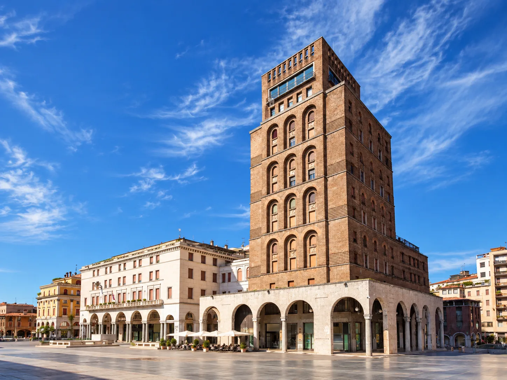
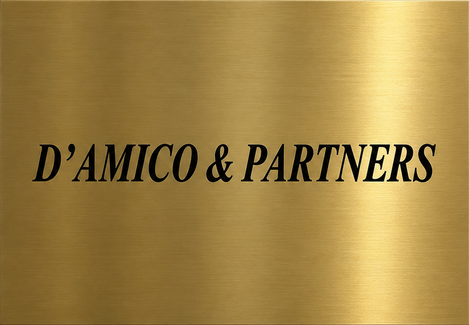

D’Amico
& Partners
Affianchiamo le imprese nelle decisioni strategiche e nelle operazioni finanziarie e societarie complesse.
Chi siamo
Piazza della Vittoria 11, Brescia · dal 2004
Operiamo a fianco degli imprenditori con una visione d’insieme che integra analisi economico-finanziaria, competenze giuridiche e conoscenza delle dinamiche aziendali, per trasformare esigenze e obiettivi in progetti concretamente realizzabili.
2004
Nasce lo studio
Le nostre origini risalgono al 2004, quando il dott. Fulvio D’Amico, Dottore Commercialista e Revisore Legale, grazie all’esperienza maturata nel settore bancario e finanziario, fonda D’Amico & Partners con l’obiettivo di supportare le piccole e medie imprese nella ricerca di risorse finanziarie e nella gestione dei rapporti con il sistema creditizio.
La nostra storia- 2004Fondazione dello studio a Brescia
- 2006Costituita D’Amico & Partners S.r.l., Piazza della Vittoria 11
- 2024Nasce D’Amico & Partners Consulting
- 2025Iscrizione all’Albo dei Mediatori Creditizi OAM, n. M640
Le persone
La nostra storiaFondatore
dott. Fulvio D’Amico
Dottore commercialista e revisore legale
Advisory
avv. Simone D’Amico
Avvocato
Advisory
dott. Giammaria D’Amico
Dottore commercialista e revisore legale
Pensare l’operazione
Un’operazione non si esaurisce nel reperimento delle risorse: richiede la valutazione dei suoi effetti finanziari, societari e giuridici, la definizione di una struttura sostenibile e il confronto con una pluralità di interlocutori.
«Siamo passati dal finanziare l’operazione al pensare l’operazione insieme all’impresa.»
D’Amico & Partners
3
Competenze economico-finanziarie, legali e societarie
2004
L’anno in cui Fulvio D’Amico fonda lo studio
M640
Iscrizione OAM di D’Amico & Partners Consulting
5
Servizi, dalla gestione della crisi al business plan
Le nostre attività
D’Amico & Partners Advisory
Specializzata nella gestione della crisi d’impresa
Advisory finanziaria e operazioni straordinarie
Assistiamo le imprese nell’analisi, nella progettazione e nella realizzazione di operazioni che incidono sulla struttura finanziaria, patrimoniale e societaria.Ristrutturazione del debito e gestione della crisi
In situazioni di tensione finanziaria o di difficoltà aziendale, affianchiamo l’imprenditore nella ricostruzione delle cause della crisi e nell’individuazione delle soluzioni più adeguate.Pianificazione e riorganizzazione societaria
Supportiamo le imprese nella valutazione e strutturazione di interventi di riorganizzazione societaria e di ridefinizione degli assetti aziendali.
D’Amico & Partners Consulting
Dedicata alla ricerca di finanza ordinaria e straordinaria
Accesso al credito e pianificazione finanziaria
Una struttura di finanziamento proporzionata ai fabbisogni aziendali e coerente con i progetti di investimento e di sviluppo, con particolare attenzione alle soluzioni a medio e lungo termine.Redazione di Business Plan
Predisponiamo business plan economici, patrimoniali e finanziari a supporto di operazioni di finanziamento, programmi di investimento, progetti di sviluppo e operazioni straordinarie.
Il nostro approccio
L’ascolto.
Il nostro lavoro inizia dall’ascolto dell’imprenditore e dall’analisi del contesto aziendale, per comprendere le esigenze effettive.
Percorsi su misura.
Valutiamo le alternative disponibili, i relativi rischi, le ricadute sul piano finanziario e la sostenibilità delle soluzioni proposte.
I piani, la negoziazione.
L’affiancamento prosegue dalla programmazione strategica alla predisposizione dei piani e alla negoziazione con le controparti.
L’operatività concreta.
Privilegiamo il confronto diretto, la continuità della relazione professionale e la capacità di adattare la strategia all’evoluzione degli scenari.
Competenze integrate, soluzioni concrete
Nelle operazioni più complesse, la validità di una scelta economica dipende anche dalla sua sostenibilità finanziaria, dalla fattibilità giuridica ed economica e dalla possibilità di tradurla in accordi efficaci.
Economico-finanziarie
Legali
Societarie
Per questo lavoriamo con un approccio integrato, mettendo in relazione competenze differenti e mantenendo una visione unitaria degli obiettivi dell’impresa.
Il coordinamento tra competenze economico-finanziarie, legali e societarie consente di affrontare l’operazione nel suo complesso, evitando una lettura frammentata delle problematiche.

Il nostro impegno è affiancare l’imprenditore con metodo, concretezza e continuità: non limitandoci a individuare una soluzione sulla carta, ma contribuendo a costruire il percorso necessario per realizzarla.
Richiedi un incontro
- Telefono
- +39 030 240 3392
- Studio
- Piazza della Vittoria 11
25121 Brescia